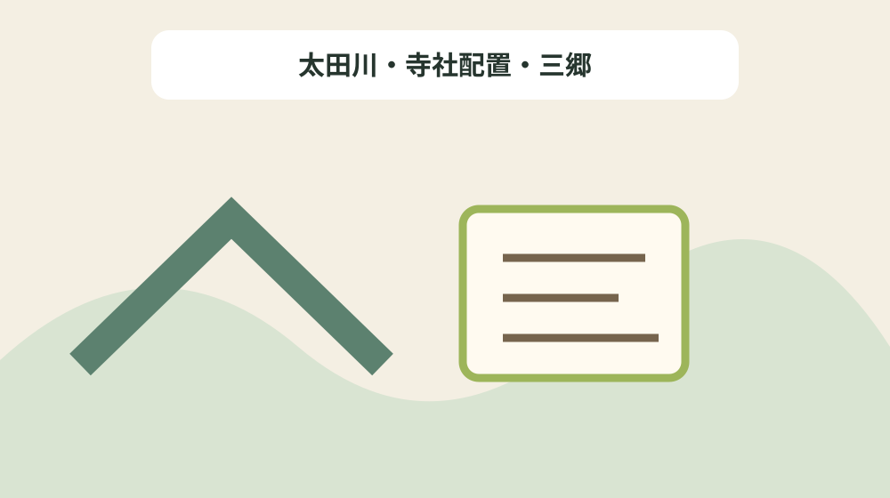
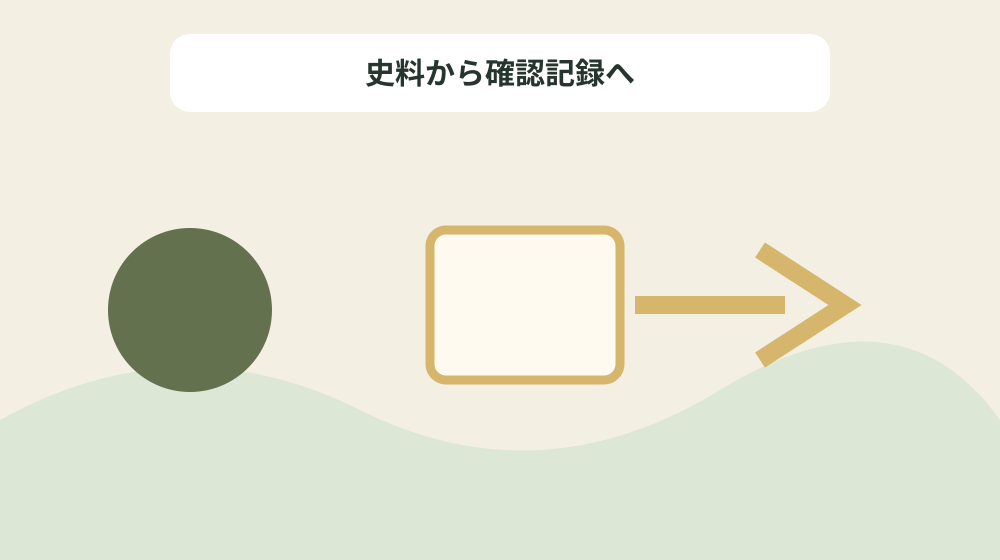

飯田荘の都うつしを川・寺社・荘園区分で照合する
結論：太田川、寺社配置、三郷、経塚、都との対応を史料表現のまま整理することで、資料の記載と現在の状態を混同しない飯田荘景観対照図になります。
飯田荘景観対照図で解く問い
森町公式資料には「白河天皇は、1075年(承保(じょうほう)2年)に法勝寺(ほっしょうじ)(国王の氏寺)の造営に着手し、1083年(永保(えいほう)3年)には愛染堂や八角九重塔が建立され、受領(ずりょう)(地方へ赴任した国司)経済的支援が大きな力となって完成されている。」と記されています。飯田荘の都うつしを川・寺社・荘園区分で照合するでは、この記載を飯田荘景観対照図の一行にし、太田川、寺社配置、三郷、経塚、都との対応を史料表現のまま整理するための根拠として扱います。資料名と確認日を先に書き、後から説明だけが独り歩きしないようにします。
同じページで確認できる「これと相まって、小國社を中心とした遠江の国神祀りも確立され、「都うつし」(京都を模倣した都市設計や文化の流入)が推進されたようである。」は、前の事実と似ていても別の対象です。太田川・寺社配置・三郷を読み解くときは、資料の掲載順ではなく、名称・年代・場所・根拠の対応を見ます。写真、家族の記憶、公的資料を三列に分け、食い違いを未確認として残します。
飯田荘景観対照図では「鎌倉期以降の 地頭 ( じとう ) (現地支配の武士)は、山内首藤氏である。」の確認欄と「太田川の西は遠江の学問所である蓮華寺(天台宗)、東は、国王の氏寺法勝寺直末観音寺(真言宗)が大きな勢力を示していたと考えられる。」の照会欄を分けます。公式本文が述べていない現況や公開可否は未確認と書き、家族の記憶には話者と聞取日を添えます。旧記録を消さず、回答日と確認先を付けた新しい行を追加します。
公式本文から確定できる十二事実
森町公式資料には「飯田荘は、観音寺を拠点に、都から下った僧侶や神人・寄人などが 都鄙 ( とひ ) 間の地域的交流の一端を担い、。」と記されています。飯田荘の都うつしを川・寺社・荘園区分で照合するでは、この記載を飯田荘景観対照図の一行にし、太田川、寺社配置、三郷、経塚、都との対応を史料表現のまま整理するための根拠として扱います。主語と対象を原文へ戻し、似た地名や人物を同じものとして扱いません。
同じページで確認できる「図−17 寺社配置図。太田川は都の鴨川に相当し、戸綿の賀茂社・飯田の観音寺・飯田天王社と川に沿って存在する。円田の大城戸は、勅使の座所で、国神祀祭者の旅館跡でもあり、京都の御所に相当する場所であろう。」は、前の事実と似ていても別の対象です。太田川・寺社配置・三郷を読み解くときは、資料の掲載順ではなく、名称・年代・場所・根拠の対応を見ます。資料の利点は典拠へ戻れることにあり、現在の状態を保証するものではありません。
飯田荘景観対照図では「これと相まって、小國社を中心とした遠江の国神祀りも確立され、「都うつし」(京都を模倣した都市設計や文化の流入)が推進されたようである。」の確認欄と「図−18 京都寺社配置図。足利健亮氏作成 「平安京と四神」 NHK 『人間大学』 景観から歴史を読む。一部追加。」の照会欄を分けます。公式本文が述べていない現況や公開可否は未確認と書き、家族の記憶には話者と聞取日を添えます。不動産の道路、境界、登記、建物安全性は、この歴史資料とは別に調べます。
飯田荘景観対照図の列を決める
森町公式資料には「太田川の西は遠江の学問所である蓮華寺(天台宗)、東は、国王の氏寺法勝寺直末観音寺(真言宗)が大きな勢力を示していたと考えられる。」と記されています。飯田荘の都うつしを川・寺社・荘園区分で照合するでは、この記載を飯田荘景観対照図の一行にし、太田川、寺社配置、三郷、経塚、都との対応を史料表現のまま整理するための根拠として扱います。年号の横へ出来事を示す動詞を残し、制作年と伝来年を一つにしません。
同じページで確認できる「飯田荘は、観音寺を拠点に、都から下った僧侶や神人・寄人などが 都鄙 ( とひ ) 間の地域的交流の一端を担い、。」は、前の事実と似ていても別の対象です。太田川・寺社配置・三郷を読み解くときは、資料の掲載順ではなく、名称・年代・場所・根拠の対応を見ます。不足する情報を空欄の理由として残し、推測で表を完成させません。
飯田荘景観対照図では「(2)鳥羽法皇像。1156年(保元元年)7月2日没。 一週間後に保元の乱がおこり、『愚管抄』には、「武士ノ世トナリケル也」と見える。 (個人所蔵)」の確認欄と「太田川を京都の加茂川に見立て、戸綿の賀茂山に賀茂三社(都の地主神)を勧請(かんじょう)し、荘園の南界には疫病を祓い流す祇園(ぎおん)祭(山名神社)も始まったようである。」の照会欄を分けます。公式本文が述べていない現況や公開可否は未確認と書き、家族の記憶には話者と聞取日を添えます。まだ売ると決めていない段階でも、資料の所在と根拠を家族で共有できます。

年代の種類を動詞で分ける
森町公式資料には「(4)東補陀落山観音寺絵図。江戸後期には観音堂だけになっているが、寺中からは平安末期の遺物が多く出土し、坊の跡も残っていた。 (森町飯田 個人所蔵)」と記されています。飯田荘の都うつしを川・寺社・荘園区分で照合するでは、この記載を飯田荘景観対照図の一行にし、太田川、寺社配置、三郷、経塚、都との対応を史料表現のまま整理するための根拠として扱います。所在地が示されても見学可能とは限らないため、公開条件を別に確認します。
同じページで確認できる「(2)鳥羽法皇像。1156年(保元元年)7月2日没。 一週間後に保元の乱がおこり、『愚管抄』には、「武士ノ世トナリケル也」と見える。 (個人所蔵)」は、前の事実と似ていても別の対象です。太田川・寺社配置・三郷を読み解くときは、資料の掲載順ではなく、名称・年代・場所・根拠の対応を見ます。問い合わせは対象名、参照ページ、確認済みの事実、知りたい一点に絞ります。
飯田荘景観対照図では「図−18 京都寺社配置図。足利健亮氏作成 「平安京と四神」 NHK 『人間大学』 景観から歴史を読む。一部追加。」の確認欄と「(4)東補陀落山観音寺絵図。江戸後期には観音堂だけになっているが、寺中からは平安末期の遺物が多く出土し、坊の跡も残っていた。 (森町飯田 個人所蔵)」の照会欄を分けます。公式本文が述べていない現況や公開可否は未確認と書き、家族の記憶には話者と聞取日を添えます。最初の一行から始め、十二事実を同時に確定しようとしないことが継続の要点です。
場所・所蔵・公開条件を混同しない
森町公式資料には「白河天皇は、1075年(承保(じょうほう)2年)に法勝寺(ほっしょうじ)(国王の氏寺)の造営に着手し、1083年(永保(えいほう)3年)には愛染堂や八角九重塔が建立され、受領(ずりょう)(地方へ赴任した国司)経済的支援が大きな力となって完成されている。」と記されています。飯田荘の都うつしを川・寺社・荘園区分で照合するでは、この記載を飯田荘景観対照図の一行にし、太田川、寺社配置、三郷、経塚、都との対応を史料表現のまま整理するための根拠として扱います。写真、家族の記憶、公的資料を三列に分け、食い違いを未確認として残します。
同じページで確認できる「飯田荘観音寺は、この法勝寺の直末寺で、後の記録では、 東補陀落山 ( ひがしふだらくさん ) 観音寺とあり、同寺の境内からは、加法経を埋納した経塚がいくつか確認されている。」は、前の事実と似ていても別の対象です。太田川・寺社配置・三郷を読み解くときは、資料の掲載順ではなく、名称・年代・場所・根拠の対応を見ます。旧記録を消さず、回答日と確認先を付けた新しい行を追加します。
飯田荘景観対照図では「鎌倉期以降の 地頭 ( じとう ) (現地支配の武士)は、山内首藤氏である。」の確認欄と「鎌倉期以降の 地頭 ( じとう ) (現地支配の武士)は、山内首藤氏である。」の照会欄を分けます。公式本文が述べていない現況や公開可否は未確認と書き、家族の記憶には話者と聞取日を添えます。資料名と確認日を先に書き、後から説明だけが独り歩きしないようにします。
良い点
森町公式資料には「飯田荘は、観音寺を拠点に、都から下った僧侶や神人・寄人などが 都鄙 ( とひ ) 間の地域的交流の一端を担い、。」と記されています。飯田荘の都うつしを川・寺社・荘園区分で照合するでは、この記載を飯田荘景観対照図の一行にし、太田川、寺社配置、三郷、経塚、都との対応を史料表現のまま整理するための根拠として扱います。資料の利点は典拠へ戻れることにあり、現在の状態を保証するものではありません。
同じページで確認できる「太田川の西は遠江の学問所である蓮華寺(天台宗)、東は、国王の氏寺法勝寺直末観音寺(真言宗)が大きな勢力を示していたと考えられる。」は、前の事実と似ていても別の対象です。太田川・寺社配置・三郷を読み解くときは、資料の掲載順ではなく、名称・年代・場所・根拠の対応を見ます。不動産の道路、境界、登記、建物安全性は、この歴史資料とは別に調べます。
飯田荘景観対照図では「これと相まって、小國社を中心とした遠江の国神祀りも確立され、「都うつし」(京都を模倣した都市設計や文化の流入)が推進されたようである。」の確認欄と「とくに、高平山遍照寺(へんじょうじ)は春岡西楽寺の奥院で、平安末期に開かれた寺院であり、境内からは当時の瓦も出土している。」の照会欄を分けます。公式本文が述べていない現況や公開可否は未確認と書き、家族の記憶には話者と聞取日を添えます。主語と対象を原文へ戻し、似た地名や人物を同じものとして扱いません。
注文したい点
森町公式資料には「太田川の西は遠江の学問所である蓮華寺(天台宗)、東は、国王の氏寺法勝寺直末観音寺(真言宗)が大きな勢力を示していたと考えられる。」と記されています。飯田荘の都うつしを川・寺社・荘園区分で照合するでは、この記載を飯田荘景観対照図の一行にし、太田川、寺社配置、三郷、経塚、都との対応を史料表現のまま整理するための根拠として扱います。不足する情報を空欄の理由として残し、推測で表を完成させません。
同じページで確認できる「図−18 京都寺社配置図。足利健亮氏作成 「平安京と四神」 NHK 『人間大学』 景観から歴史を読む。一部追加。」は、前の事実と似ていても別の対象です。太田川・寺社配置・三郷を読み解くときは、資料の掲載順ではなく、名称・年代・場所・根拠の対応を見ます。まだ売ると決めていない段階でも、資料の所在と根拠を家族で共有できます。
飯田荘景観対照図では「(2)鳥羽法皇像。1156年(保元元年)7月2日没。 一週間後に保元の乱がおこり、『愚管抄』には、「武士ノ世トナリケル也」と見える。 (個人所蔵)」の確認欄と「白河天皇は、1075年(承保(じょうほう)2年)に法勝寺(ほっしょうじ)(国王の氏寺)の造営に着手し、1083年(永保(えいほう)3年)には愛染堂や八角九重塔が建立され、受領(ずりょう)(地方へ赴任した国司)経済的支援が大きな力となって完成されている。」の照会欄を分けます。公式本文が述べていない現況や公開可否は未確認と書き、家族の記憶には話者と聞取日を添えます。年号の横へ出来事を示す動詞を残し、制作年と伝来年を一つにしません。
対案・結論
森町公式資料には「(4)東補陀落山観音寺絵図。江戸後期には観音堂だけになっているが、寺中からは平安末期の遺物が多く出土し、坊の跡も残っていた。 (森町飯田 個人所蔵)」と記されています。飯田荘の都うつしを川・寺社・荘園区分で照合するでは、この記載を飯田荘景観対照図の一行にし、太田川、寺社配置、三郷、経塚、都との対応を史料表現のまま整理するための根拠として扱います。問い合わせは対象名、参照ページ、確認済みの事実、知りたい一点に絞ります。
同じページで確認できる「太田川を京都の加茂川に見立て、戸綿の賀茂山に賀茂三社(都の地主神)を勧請(かんじょう)し、荘園の南界には疫病を祓い流す祇園(ぎおん)祭(山名神社)も始まったようである。」は、前の事実と似ていても別の対象です。太田川・寺社配置・三郷を読み解くときは、資料の掲載順ではなく、名称・年代・場所・根拠の対応を見ます。最初の一行から始め、十二事実を同時に確定しようとしないことが継続の要点です。
飯田荘景観対照図では「図−18 京都寺社配置図。足利健亮氏作成 「平安京と四神」 NHK 『人間大学』 景観から歴史を読む。一部追加。」の確認欄と「これと相まって、小國社を中心とした遠江の国神祀りも確立され、「都うつし」(京都を模倣した都市設計や文化の流入)が推進されたようである。」の照会欄を分けます。公式本文が述べていない現況や公開可否は未確認と書き、家族の記憶には話者と聞取日を添えます。所在地が示されても見学可能とは限らないため、公開条件を別に確認します。

家族に残す確認記録
森町公式資料には「白河天皇は、1075年(承保(じょうほう)2年)に法勝寺(ほっしょうじ)(国王の氏寺)の造営に着手し、1083年(永保(えいほう)3年)には愛染堂や八角九重塔が建立され、受領(ずりょう)(地方へ赴任した国司)経済的支援が大きな力となって完成されている。」と記されています。飯田荘の都うつしを川・寺社・荘園区分で照合するでは、この記載を飯田荘景観対照図の一行にし、太田川、寺社配置、三郷、経塚、都との対応を史料表現のまま整理するための根拠として扱います。旧記録を消さず、回答日と確認先を付けた新しい行を追加します。
同じページで確認できる「(4)東補陀落山観音寺絵図。江戸後期には観音堂だけになっているが、寺中からは平安末期の遺物が多く出土し、坊の跡も残っていた。 (森町飯田 個人所蔵)」は、前の事実と似ていても別の対象です。太田川・寺社配置・三郷を読み解くときは、資料の掲載順ではなく、名称・年代・場所・根拠の対応を見ます。資料名と確認日を先に書き、後から説明だけが独り歩きしないようにします。
飯田荘景観対照図では「鎌倉期以降の 地頭 ( じとう ) (現地支配の武士)は、山内首藤氏である。」の確認欄と「図−17 寺社配置図。太田川は都の鴨川に相当し、戸綿の賀茂社・飯田の観音寺・飯田天王社と川に沿って存在する。円田の大城戸は、勅使の座所で、国神祀祭者の旅館跡でもあり、京都の御所に相当する場所であろう。」の照会欄を分けます。公式本文が述べていない現況や公開可否は未確認と書き、家族の記憶には話者と聞取日を添えます。写真、家族の記憶、公的資料を三列に分け、食い違いを未確認として残します。
現地確認と権利資料を分ける
森町公式資料には「飯田荘は、観音寺を拠点に、都から下った僧侶や神人・寄人などが 都鄙 ( とひ ) 間の地域的交流の一端を担い、。」と記されています。飯田荘の都うつしを川・寺社・荘園区分で照合するでは、この記載を飯田荘景観対照図の一行にし、太田川、寺社配置、三郷、経塚、都との対応を史料表現のまま整理するための根拠として扱います。不動産の道路、境界、登記、建物安全性は、この歴史資料とは別に調べます。
同じページで確認できる「鎌倉期以降の 地頭 ( じとう ) (現地支配の武士)は、山内首藤氏である。」は、前の事実と似ていても別の対象です。太田川・寺社配置・三郷を読み解くときは、資料の掲載順ではなく、名称・年代・場所・根拠の対応を見ます。主語と対象を原文へ戻し、似た地名や人物を同じものとして扱いません。
飯田荘景観対照図では「これと相まって、小國社を中心とした遠江の国神祀りも確立され、「都うつし」(京都を模倣した都市設計や文化の流入)が推進されたようである。」の確認欄と「飯田荘は、観音寺を拠点に、都から下った僧侶や神人・寄人などが 都鄙 ( とひ ) 間の地域的交流の一端を担い、。」の照会欄を分けます。公式本文が述べていない現況や公開可否は未確認と書き、家族の記憶には話者と聞取日を添えます。資料の利点は典拠へ戻れることにあり、現在の状態を保証するものではありません。
大石の視点
森町公式資料には「太田川の西は遠江の学問所である蓮華寺(天台宗)、東は、国王の氏寺法勝寺直末観音寺(真言宗)が大きな勢力を示していたと考えられる。」と記されています。飯田荘の都うつしを川・寺社・荘園区分で照合するでは、この記載を飯田荘景観対照図の一行にし、太田川、寺社配置、三郷、経塚、都との対応を史料表現のまま整理するための根拠として扱います。まだ売ると決めていない段階でも、資料の所在と根拠を家族で共有できます。
同じページで確認できる「とくに、高平山遍照寺(へんじょうじ)は春岡西楽寺の奥院で、平安末期に開かれた寺院であり、境内からは当時の瓦も出土している。」は、前の事実と似ていても別の対象です。太田川・寺社配置・三郷を読み解くときは、資料の掲載順ではなく、名称・年代・場所・根拠の対応を見ます。年号の横へ出来事を示す動詞を残し、制作年と伝来年を一つにしません。
飯田荘景観対照図では「(2)鳥羽法皇像。1156年(保元元年)7月2日没。 一週間後に保元の乱がおこり、『愚管抄』には、「武士ノ世トナリケル也」と見える。 (個人所蔵)」の確認欄と「(2)鳥羽法皇像。1156年(保元元年)7月2日没。 一週間後に保元の乱がおこり、『愚管抄』には、「武士ノ世トナリケル也」と見える。 (個人所蔵)」の照会欄を分けます。公式本文が述べていない現況や公開可否は未確認と書き、家族の記憶には話者と聞取日を添えます。不足する情報を空欄の理由として残し、推測で表を完成させません。
まとめ
森町公式資料には「(4)東補陀落山観音寺絵図。江戸後期には観音堂だけになっているが、寺中からは平安末期の遺物が多く出土し、坊の跡も残っていた。 (森町飯田 個人所蔵)」と記されています。飯田荘の都うつしを川・寺社・荘園区分で照合するでは、この記載を飯田荘景観対照図の一行にし、太田川、寺社配置、三郷、経塚、都との対応を史料表現のまま整理するための根拠として扱います。最初の一行から始め、十二事実を同時に確定しようとしないことが継続の要点です。
同じページで確認できる「白河天皇は、1075年(承保(じょうほう)2年)に法勝寺(ほっしょうじ)(国王の氏寺)の造営に着手し、1083年(永保(えいほう)3年)には愛染堂や八角九重塔が建立され、受領(ずりょう)(地方へ赴任した国司)経済的支援が大きな力となって完成されている。」は、前の事実と似ていても別の対象です。太田川・寺社配置・三郷を読み解くときは、資料の掲載順ではなく、名称・年代・場所・根拠の対応を見ます。所在地が示されても見学可能とは限らないため、公開条件を別に確認します。
飯田荘景観対照図では「図−18 京都寺社配置図。足利健亮氏作成 「平安京と四神」 NHK 『人間大学』 景観から歴史を読む。一部追加。」の確認欄と「飯田荘観音寺は、この法勝寺の直末寺で、後の記録では、 東補陀落山 ( ひがしふだらくさん ) 観音寺とあり、同寺の境内からは、加法経を埋納した経塚がいくつか確認されている。」の照会欄を分けます。公式本文が述べていない現況や公開可否は未確認と書き、家族の記憶には話者と聞取日を添えます。問い合わせは対象名、参照ページ、確認済みの事実、知りたい一点に絞ります。
よくある質問
飯田荘景観対照図で最初に書く項目は何ですか。
資料名、対象名、確認日、根拠の種類です。太田川、寺社配置、三郷、経塚、都との対応を史料表現のまま整理するため、現況と家族の記憶は別欄にします。
飯田荘景観対照図に所在地があれば現地を見学できますか。
掲載だけでは判断できません。白河天皇は、1075年(承保(じょうほう)2年)に法勝寺(ほっしょうじ)(国王の氏寺)の造営に着手し、1083年(永保(えいほう)3年)には愛染堂や八角九重塔が建立され、受領(ずりょう)(地方へ赴任した国司)経済的支援が大きな力となって完成されている。という記録は太田川・寺社配置・三郷を読む根拠ですが、現在の公開日時や立入り条件の根拠ではありません。対象ごとに管理者の案内を確認します。
飯田荘景観対照図で年代が複数ある場合はどれを採用しますか。
鎌倉期以降の 地頭 ( じとう ) (現地支配の武士)は、山内首藤氏である。という記録を起点に、太田川・寺社配置・三郷の制作、記録、移転、発見などの動作を分けます。異なる出来事の年は統合せず、それぞれの典拠を同じ行に残します。
家族の記憶は飯田荘景観対照図の公式事実と一緒に書けますか。
飯田荘は、観音寺を拠点に、都から下った僧侶や神人・寄人などが 都鄙 ( とひ ) 間の地域的交流の一端を担い、。という公的記載とは別欄にします。太田川・寺社配置・三郷について話した人、聞取日、確信度を書けば、家族の記憶を残しつつ公的資料へ上書きせず比較できます。
公式情報源
最終確認日：2026-08-18 ／ 公表事実と執筆者の解釈・意見を分けて記載しています。